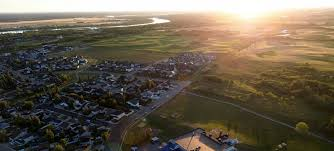
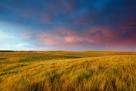
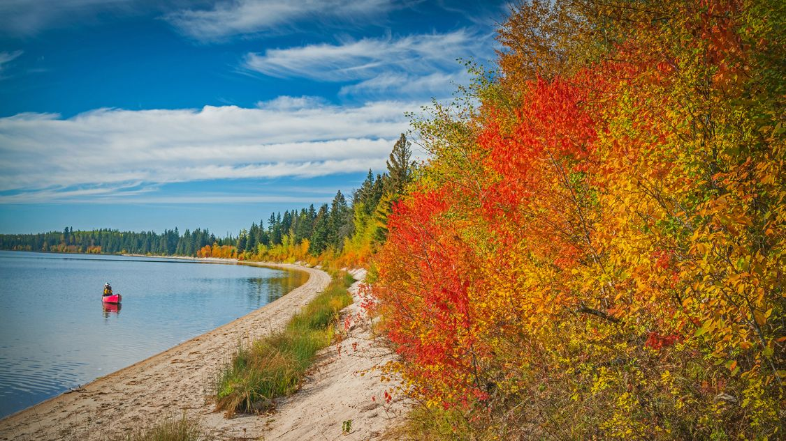
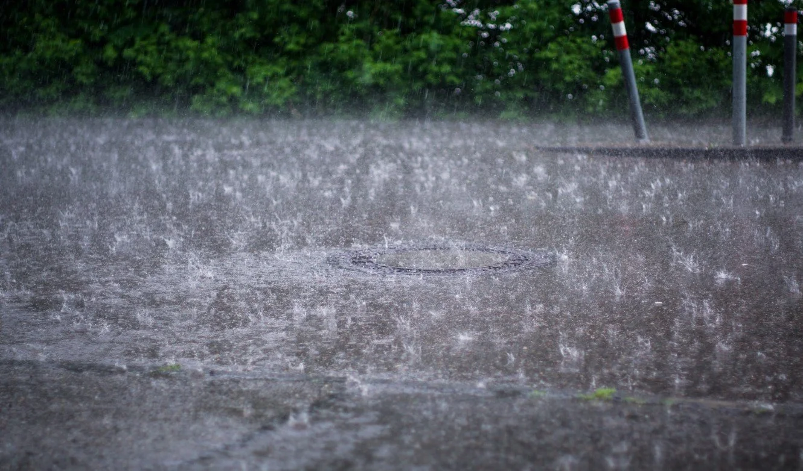
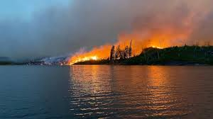
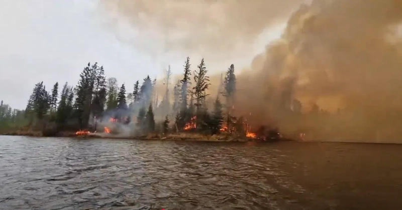
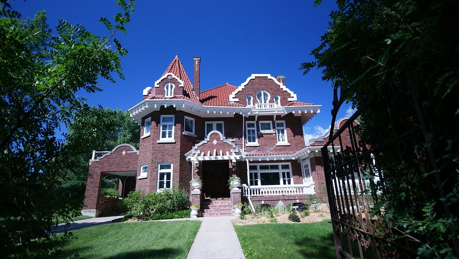

Welcome to Prince Albert! A beautiful, luscious city located in Saskatchewan. This virtual experience will dive into the rich history,
indigenous involvement, and how non-native settlers helped to shape Prince Albert into what it is today. Click the 'X' in the top right to begin
exploring! (P.S. The taskbar with all the menus is at the bottom of the screen!)

Landscape of Prince Albert
Prince Albert is located on a relatively flat surface, as per the usual and expected—but true—stereotype.

The landscape of Prince Albert was formed from the erosion of the Canadian Shield and the rocky mountains, creating a flat, nonarid
landscape. However, even though it is relatively flat, does not mean that it cannot have a beautiful landscape, as seen below.

Brief History of Prince Albert
Initially settled by indigenous peoples, coming from the following groups: Blackfoot, Cree, Plains Cree, and Métis (Métis having came
later after colonial expansion).
The city of Prince Albert sits ontop of Treaty 6, which was signed with promises of healthcare, education, hunting rights, and freedom
were promised to the Cree (who were the major members of signing the treaty), but this was broken with the passing of the Indian Act by federal
legislators which pushed indigenous groups onto reserves.
Prince Albert was founded in 1866 by a man known as Reverend* James Nisbet. Someone else did establish an earlier site there in 1862,
who went by the name of James Isbister. Nisbet formally named the new settlement Prince* Albert in honour of Queen Victoria's husband.
Weather of Prince Albert
On average, Prince Albert experiences around 502mm of annual precipitation; the city also has an average temperature of around
1.7°C, so it is highly recommended that you pack some trousers, coats, umbrellas, and some boots to enjoy the weather. There are also days
where the weather is relatively calm, dry, and sunny, so make sure to also pack some shorts, t-shirts, and shoes.

The city of Prince Albert is also the home of some extreme winds during storms, as the winds can reach up to 85km/h. For reference, that
is the average speed cap of most subarban roads and highways in Canada.
Threats to Prince Albert
Despite strong resiliance to the winds and evershifting tides of the weather, Prince Albert is still susceptable to forest fires. Even
with the threat of forest fires, the fire departments and other groups during wildfire season can keep majority (~85-95%) of the threat contained,
ensuring the safety of the residents of Prince Albert.


Attractions of The City
Little Red River Park was built as a conservation of the river and her animals, as well as having plenty of nature trails either
running through it or being part of the park. Festivals as well as cross country skiing do take place at the park.
Northern Lights Casino attracts plenty of visitors with flashing lights, games, drinks, and endless gambling.
Cookie Municipal Gold Course is obviously a golf course, but it also conserves trees and land from development of homes and
offices.
Keyhole Castle was a restored "castle", or home, that has now been transformed into the main center of tourism. It currently serves
as a bed & breakfast place.

Glossary of Cool Words
Reverend - A church leader.
Prince (Albert) - Refers to the title of Prince Consort, which refers to the wife of a Queen Regnant*.
Queen Regnant - A woman who is the monarch in her own right and not by marriage (Queen Elizabeth I/II, Queen Mary I/II)